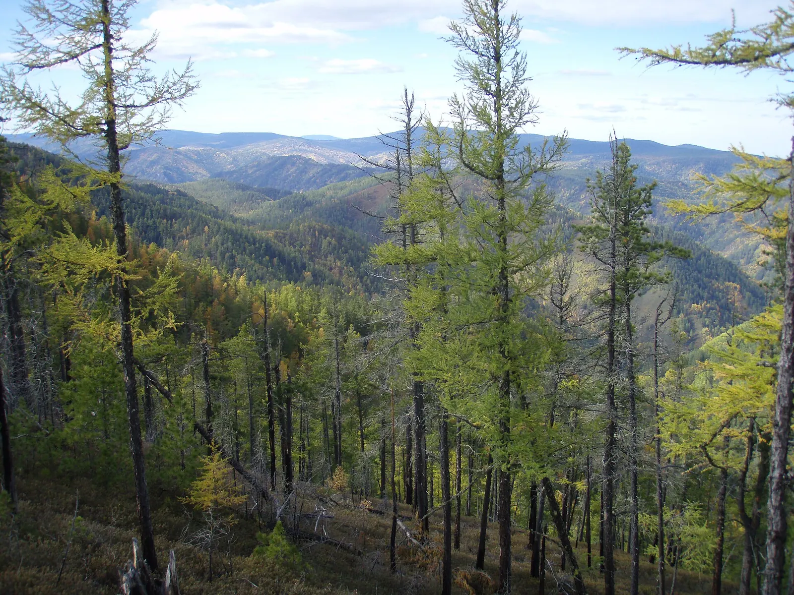
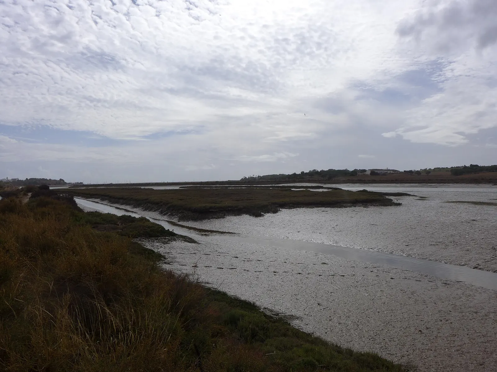

Two ecosystems, side by side
One is a land biome shaped by cold, snow and fire; the other is a water life zone shaped by salt, tides and mud. Laid next to each other, they turn out to solve surprisingly similar problems.


Comparison at a glance
Each row links back to the matching numbered section on the ecosystem pages.
| Feature | Evergreen coniferous forest | Estuarine zone |
|---|---|---|
| Kind of ecosystem | Terrestrial biome, defined mainly by climate: temperature and precipitation decide which plants can grow. | Aquatic life zone, defined mainly by water: salinity, depth, tides and river flow decide what can live there. |
| Where and whySection 3: forest, estuary | A belt across Alaska, Canada, Scandinavia and Russia, mostly about 50° to 70° N; set by latitude, so there is no boreal forest in the Southern Hemisphere.1 | Wherever rivers meet the sea, on every inhabited continent and at every latitude; set by coastline and rivers, not by latitude.2 |
| Climate or conditionsSection 1: forest, estuary | Subarctic: Fairbanks averages −22 °C in January and 17 °C in July, with only 296 mm of precipitation a year and a 121-day frost-free season.3 | Brackish water from 0.5 to 35 ppt that changes with every tide and season; the Chesapeake Bay ranges from 34 °F in winter to 84 °F in summer.2,4 |
| Main limiting factors | Cold, a short growing season, frozen soil in winter, low nutrients and periodic fire.5 | Changing salinity, tidal flooding, low oxygen in the mud and, in polluted water, low oxygen in the water itself.6,7,8 |
| Soil or substrateSection 2: forest, estuary | Spodosols (podzols): acidic, leached, nutrient-poor; peat in bogs and permafrost in the far north.9,10 | Fine mud, sand and marsh peat; rich in nutrients but oxygen-free below a thin surface layer, with hydrogen sulfide.7,11 |
| Main producers | Black and white spruce, balsam fir, lodgepole pine, tamarack. | Phytoplankton, smooth cordgrass, eelgrass, salt hay and glasswort. |
| Productivity | Low per acre (black spruce stands are the least productive boreal forest type), but huge carbon stores because the biome is so large.12,13 | Among the most fertile ecosystems on Earth, fed by nutrients from the whole watershed.14 |
| Biodiversity | Relatively few tree species; a dense canopy limits the understory.15 | Relatively few species, because tolerating wide salinity swings takes a lot of energy; huge numbers of individuals.6 |
| Adaptation themesSection 4: forest, estuary | Surviving cold and snow (needles, conical crowns, freeze tolerance, white coats, big feet), using fire (serotinous cones) and storing food for winter. | Handling salt (salt glands, osmoregulation, osmoconforming), getting oxygen into mud (aerenchyma, burrows) and timing life to the tides. |
| Key relationships | Snowshoe hare and Canada lynx cycle; red squirrels and spruce mast years; root fungi build soil carbon.16,17,13 | Ribbed mussels and fiddler crabs help cordgrass; blue crabs keep periwinkles from destroying the marsh.18,19,20 |
| Human problemsSection 5: forest, estuary | Logging, fragmentation, climate change, changing wildfire, insect outbreaks, mining and oil sands, biodiversity loss. | Farm runoff, fertilizer, excess nitrogen and phosphorus, dead zones, sewage and industrial pollution, plastics, development, dredging, sea-level rise, overfishing. |
| SolutionsSection 6: forest, estuary | Sustainable forestry, replanting, protected areas, wildlife crossings, mine reclamation, prescribed fire, climate-matched seed sources. | Runoff controls, wastewater upgrades, marsh restoration, living shorelines, pollution prevention, sustainable fishing, reserves and monitoring. |
Same challenge, different setting
Several of the hardest problems in the two ecosystems are really the same problem in disguise.
Water that plants cannot use
In a boreal winter, roots cannot replace water lost from the leaves because the soil is frozen, so winter is a drought for trees.5 In a salt marsh, water is everywhere but full of salt. Both conifers and cordgrass therefore guard their water: conifers with waxy, narrow needles, cordgrass by filtering salt at the root and secreting it from the leaves.5,6
Soil without oxygen
Black spruce grows on cold, waterlogged peat and permafrost, keeping most of its roots in the top 20 cm of soil.12 Smooth cordgrass grows in airless marsh mud and pipes oxygen down to its roots through aerenchyma.21 In both places, waterlogging is what lets peat build up.
Slow decay, big carbon stores
Cold slows decomposition in the boreal forest, so needles and moss pile up into a thick organic layer; waterlogging slows it in a marsh, so dead plant matter accumulates as peat several feet thick. Both ecosystems store large amounts of carbon in their soils.5,13,7,22
Disturbance as a reset button
In the forest, fire opens serotinous lodgepole pine cones and recycles nutrients.23,24 In the estuary, the tide floods the marsh once or twice a day, delivers food and sets the schedule for fiddler crabs, periwinkles and mummichogs.2,25,26
How the two ecosystems are connected
1
Rivers carry the forest to the sea
Estuaries collect whatever their watersheds send downstream.14 Several estuaries on our world map, such as the St. Lawrence and the Columbia, are fed by rivers that drain large areas of coniferous forest (compare the forest map). What happens to forests upstream, from logging to fire, therefore shapes the water that reaches the estuary.
2
Forests protect estuary water quality
In the Chesapeake Bay watershed, forests capture more than 85% of the airborne nitrogen that falls on them, nitrogen that would otherwise feed algae blooms in the bay.30 Protecting forests upstream therefore also protects the estuary downstream.
3
4
Climate change at both ends of the river
The Arctic has warmed nearly four times faster than the globe as a whole since 1979.33 On the coast, sea-level rise is creating ghost forests where salt water kills coastal trees.34 In both places, species are under pressure to move, and protected corridors or room to migrate inland are part of the solution.32
Review: compare and explain
Questions that ask you to connect the two ecosystems. Click a question to reveal a model answer.
Why is the coniferous forest called a biome but the estuary a life zone?
Biomes are land ecosystems classified mainly by climate (temperature and precipitation). Aquatic life zones are classified by water conditions such as salinity, depth and flow; an estuary is defined by the mixing of fresh and salt water, not by its climate.
Compare the main limiting factor in each ecosystem.
How do black spruce and smooth cordgrass each cope with waterlogged soil?
Which ecosystem is more productive, and why?
Give one example of a trophic relationship that controls each ecosystem.
Why can pollution on a farm far inland harm an estuary?
Sources cited
Every numbered superscript on this page links here. Full lists for each page are on the Sources & Credits page.
- (2017). An ecoregion-based approach to protecting half the terrestrial realm. BioScience, 67(6), 534–545. https://doi.org/10.1093/biosci/bix014
- (n.d.). What is an estuary? (Estuaries tutorial). https://oceanservice.noaa.gov/education/tutorial_estuaries/est01_whatis.html
- (2021). U.S. Climate Normals 1991–2020, monthly and annual normals: Fairbanks International Airport, Alaska (station USW00026411). NOAA NCEI Access Data Service. https://www.ncei.noaa.gov/access/services/data/v1?dataset=normals-monthly-1991-2020&stations=USW00026411&dataTypes=MLY-TMAX-NORMAL,MLY-TMIN-NORMAL,MLY-TAVG-NORMAL,MLY-PRCP-NORMAL,MLY-SNOW-NORMAL&format=csv&units=standard
- (n.d.). Physical characteristics. https://www.chesapeakebay.net/discover/ecosystem/physical-characteristics
- (2004). Conifer adaptations to winter. College of Saint Benedict & Saint John's University, Biology Department. https://employees.csbsju.edu/ssaupe/essays/conifer_adaptations.htm
- (n.d.). Adaptations to life in the estuary (Estuaries tutorial). https://oceanservice.noaa.gov/education/tutorial_estuaries/est07_adaptations.html
- (n.d.). Estuarine habitats (Estuaries tutorial). https://oceanservice.noaa.gov/education/tutorial_estuaries/est06_habitats.html
- (n.d.). Dissolved oxygen. https://www.chesapeakebay.net/discover/ecosystem/dissolved-oxygen
- (n.d.). Spodosols (The twelve soil orders). https://www.uidaho.edu/cals/soil-orders/spodosols
- (n.d.). Gelisols (The twelve soil orders). https://www.uidaho.edu/cals/soil-orders/gelisols
- (1990). Mechanism for the hydrogen sulfide-induced growth limitation in wetland macrophytes. Limnology and Oceanography, 35(2), 399–408. https://doi.org/10.4319/lo.1990.35.2.0399
- (n.d.). Picea mariana (black spruce) species review. https://www.fs.usda.gov/database/feis/plants/tree/picmar/all.html
- (2013). Roots and associated fungi drive long-term carbon sequestration in boreal forest. Science, 339(6127), 1615–1618. https://doi.org/10.1126/science.1231923
- (n.d.). Ecosystem services (Estuaries tutorial). https://oceanservice.noaa.gov/education/tutorial_estuaries/est03_ecosystem.html
- (n.d.). The forest biome. UC Berkeley. https://ucmp.berkeley.edu/exhibits/biomes/forests.php
- (2001). What drives the 10-year cycle of snowshoe hares? BioScience, 51(1), 25. https://doi.org/10.1641/0006-3568(2001)051[0025:WDTYCO]2.0.CO;2
- (2010). The functional response of a hoarding seed predator to mast seeding. Ecology, 91(9), 2673–2683. https://doi.org/10.1890/09-1816.1
- (1984). Ribbed mussels and Spartina alterniflora production in a New England salt marsh. Ecology, 65(6), 1794–1807. https://doi.org/10.2307/1937776
- (1985). Fiddler crab regulation of Spartina alterniflora production on a New England salt marsh. Ecology, 66(3), 1042–1055. https://doi.org/10.2307/1940564
- (2002). A trophic cascade regulates salt marsh primary production. Proceedings of the National Academy of Sciences, 99(16), 10500–10505. https://doi.org/10.1073/pnas.162366599
- (n.d.). Plant guide: Smooth cordgrass, Spartina alterniflora. https://plants.usda.gov/DocumentLibrary/plantguide/pdf/pg_spal.pdf
- (2017). A global map of saltmarshes. Biodiversity Data Journal, 5, e11764. https://doi.org/10.3897/BDJ.5.e11764
- (n.d.). Pinus contorta var. latifolia (Rocky Mountain lodgepole pine) species review. https://www.fs.usda.gov/database/feis/plants/tree/pinconl/all.html
- (n.d.). Prescribed fire. https://www.fs.usda.gov/managing-land/prescribed-fire
- (n.d.). Uca pugnax, Atlantic marsh fiddler. https://animaldiversity.org/accounts/Uca_pugnax/
- (n.d.). Mummichog (field guide). https://www.chesapeakebay.net/discover/field-guide/entry/mummichog
- (2018). Function and underlying mechanisms of seasonal colour moulting in mammals and birds: What keeps them changing in a warming world? Biological Reviews, 93(3), 1478–1498. https://doi.org/10.1111/brv.12405
- (2013). Camouflage mismatch in seasonal coat color due to decreased snow duration. Proceedings of the National Academy of Sciences, 110(18), 7360–7365. https://doi.org/10.1073/pnas.1222724110
- (1957). Persistent tidal cycles of spontaneous motor activity in the fiddler crab, Uca pugnax. The Biological Bulletin, 112(3), 267–275. https://doi.org/10.2307/1539119
- (n.d.). Bay facts. https://www.chesapeakebay.net/discover/bay-facts
- (2024). Drivers and impacts of the record-breaking 2023 wildfire season in Canada. Nature Communications, 15(1), 6764. https://doi.org/10.1038/s41467-024-51154-7
- (n.d.). Climate change (Threats to the Bay). https://www.chesapeakebay.net/issues/threats-to-the-bay/climate-change
- (2022). The Arctic has warmed nearly four times faster than the globe since 1979. Communications Earth & Environment, 3(1), 168. https://doi.org/10.1038/s43247-022-00498-3
- (n.d.). What is a ghost forest? https://oceanservice.noaa.gov/facts/ghost-forest.html
- (n.d.). Sources and solutions: Agriculture. https://www.epa.gov/nutrientpollution/sources-and-solutions-agriculture